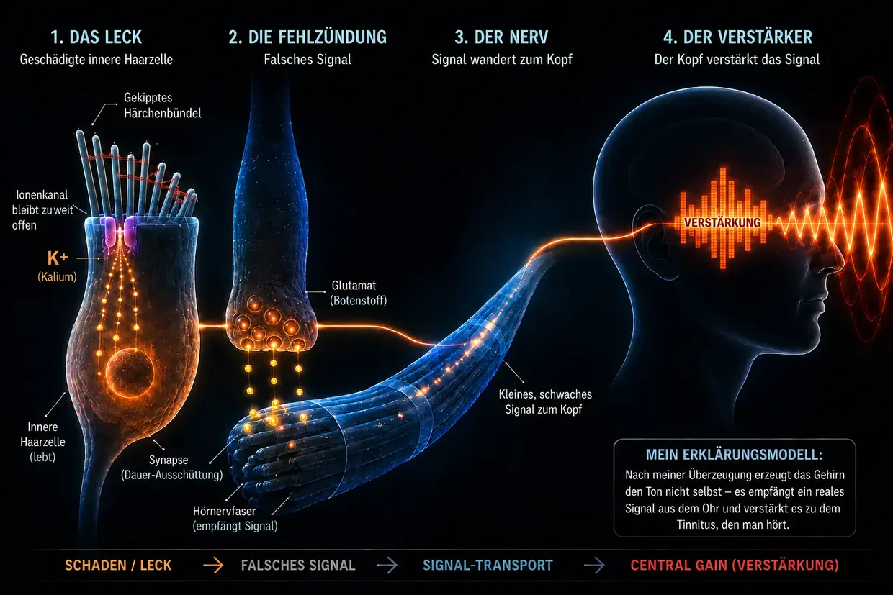

Tinnitus akibat kebisingan – ketika telinga mencapai batasnya
Terakhir diperbarui: Agustus 2026
Ini adalah penjelasan saya sendiri, berdasarkan riset bertahun-tahun dan tinnitus saya sendiri yang dua kali berhasil saya atasi sepenuhnya – bukan standar medis.
Saya sendiri dulu juga mengalami penyakit ekstrem ini – seperti yang sudah saya ceritakan dalam biografi saya.
Saya begitu putus asa sampai bersumpah kepada diri sendiri: Entah tinnitusnya yang pergi, atau saya yang pergi. (Tentu saja saya tidak benar-benar bermaksud melakukannya, tetapi tekanan yang saya rasakan memang luar biasa.)
Yang saya alami saat itu terutama adalah nada keras, nyaring, dan berfrekuensi tinggi di telinga kiri, disertai desis jauh di latar belakang. Itu adalah hal terburuk yang pada saat itu bisa saya bayangkan. Seolah belum cukup, pada hari ketiga sudah muncul pula bunyi bip lemah di telinga kanan. Tak lama kemudian, bunyi di telinga kanan yang sudah ada itu menjadi jauh lebih kuat – sebagai akibat langsung dari instruksi dokter yang bagi saya pribadi ternyata sepenuhnya keliru.
Inti “instruksi” itu adalah menutupi nada tersebut dengan suara lain – misalnya musik melalui headphone dengan volume lebih tinggi atau derau yang terus diputar. Namun dalam kenyataannya, itu berarti telinga saya menerima rangsangan suara yang bahkan lebih banyak, padahal keduanya sudah kewalahan berat. Jika melihat ke belakang, itu adalah salah satu kesalahan terbesar, karena justru itulah yang memperburuk keadaan saya dan membuat bunyi lemah yang sudah ada di telinga kanan menjadi jauh lebih kuat.
Bunyi itu seperti serangan permanen terhadap saraf, tidur, dan seluruh hidup saya. Dokter berkata saya harus belajar hidup dengannya. Di internet saya menemukan terapi-terapi yang saling bertentangan. Bagi saya, semuanya terdengar seperti kebingungan tanpa jawaban.
Jadi saya bersumpah kepada diri sendiri: Tidak mungkin hanya ini jawabannya. Saya mulai meriset seperti orang kerasukan, membaca studi, membandingkan kisah pengalaman, dan membentuk gambaran saya sendiri. Sedikit demi sedikit muncul satu mekanisme yang jelas – gambaran yang bagi saya logis dan kemudian juga terkonfirmasi melalui pengalaman saya sendiri.
Hari ini saya bisa berkata: Tinnitus akibat kebisingan bukan misteri. Ia adalah hasil dari telinga yang mengalami kelebihan beban – dan jika kita memahami apa yang terjadi di sana, kita juga memahami mengapa bunyi itu ada dan apa yang bisa kita lakukan sendiri.
Ringkasan Baca dalam 60 detik – inti terpenting dalam sekali pandang
Pada volume ekstrem (misalnya di diskotek), pompa-pompa sel tidak lagi mampu mengejar. Konsumsi energi (ATP) meledak, sel tidak dapat memasok cukup energi, lalu beralih ke mode darurat yang “kotor”, yang menghasilkan asam laktat dan membuat lingkungan sel menjadi asam – spiral menurun yang mirip dengan kegagalan otot saat sprint. Ketika pompa tak lagi mampu mengejar, kalsium menumpuk di dalam rambut-rambut sensorik yang sangat kecil. Kelebihan kalsium ini mengaktifkan enzim pengurai (kalpain), yang memakan “lem” (pengikat silang/crosslinker) di antara benang-benang struktur di dalam rambut tersebut. Tanpa lem ini, rambut sensorik kehilangan kekakuannya dan berubah bentuk. Akibatnya, kanal ion di ujungnya terus terbuka terlalu lebar – seperti jendela yang dibiarkan miring terbuka. Melalui kebocoran permanen ini, kalium terus mengalir masuk dan membuat seluruh sel berada di bawah tegangan listrik terus-menerus. Tegangan tersebut membuka kanal-kanal lain di dalam sel rambut dalam, sehingga kalsium menetes ke sinaps dan memicu pelepasan glutamat tanpa henti ke saraf pendengaran. Otak menerima sinyal keliru yang lemah tetapi konstan ini, mengenali bahwa input normal di rentang frekuensi tersebut hilang, lalu menaikkan penguat internalnya (Central Gain) secara ekstrem. Baru melalui penguatan inilah sinyal keliru yang halus berubah menjadi nada yang disadari – tinnitus.
Kabar baiknya: Selama sel masih hidup, ia memiliki rancangan dan kemampuan untuk memperbaiki diri. Untuk itu ia membutuhkan energi, bahan bangunan, dan ketenangan.
Apa yang sebenarnya terjadi di telinga: proses fisiologis pendengaran yang normal
Sebelum masuk lebih dalam, saya perlu menjelaskan istilahnya sebentar agar kita memahami seluruh teks ini dengan cara yang sama: Di telinga dalam terdapat apa yang disebut sel-sel rambut – sel sensorik yang benar-benar bertugas untuk mendengar. Di permukaan setiap sel rambut berdiri satu bundel tonjolan kecil berbentuk jari – stereosilia. Tergantung posisinya di koklea, setiap sel rambut memiliki sekitar 50 hingga 300 stereosilia, tersusun dari pendek ke panjang seperti pipa organ. Setiap stereosilia memiliki rangka penyangga internalnya sendiri yang terbuat dari protein aktin. Dalam bahasa sehari-hari maupun dalam penelitian, stereosilia sering hanya disebut “rambut” atau “rambut sensorik” – dan begitulah istilah itu saya gunakan di halaman ini. Yang penting: Ketika saya mengatakan “rambut”, yang saya maksud selalu stereosilia di atas sel rambut, bukan sel rambut itu sendiri.
Penting untuk rantai sinyal: Ketika saya menjelaskan pelepasan glutamat di sinaps dan sinyal menuju saraf pendengaran, yang dimaksud secara khusus adalah sel rambut dalam.
Dalam keadaan normal, proses mendengar berjalan sebagai reaksi berantai yang sangat presisi:
Impuls: Rangsangan suara menghantam rambut-rambut halus (stereosilia) pada sel rambut dan membengkokkannya ke samping.
Tarikan mekanis (tip-link): Karena ujung rambut-rambut ini saling terhubung oleh benang protein yang sangat halus (tip-link), pembengkokan menimbulkan tegangan. Benang-benang ini bekerja seperti tali penarik mekanis: secara fisik mereka menarik kanal ion di ujung rambut hingga terbuka – mirip sumbat bak mandi yang dibuka dengan menarik rantainya.
Aliran masuk: Karena telinga dalam dipenuhi cairan kaya kalium, kalium (K+) segera mengalir masuk ke rambut sensorik melalui kanal yang kini terbuka – dan dalam jumlah kecil, kalsium juga ikut masuk.
Aktivasi: Aliran masuk kalium ini mengubah tegangan listrik sel rambut dalam (depolarisasi). Perubahan tersebut kemudian membuka kanal kalsium lebih jauh di bawah, di dalam sel rambut dalam itu sendiri – bukan di rambut sensoriknya, melainkan di badan sel di bawahnya.
Sinyal: Baru kalsium yang masuk ke sel rambut dalam inilah yang memicu pelepasan neurotransmiter, yang menembakkan sinyal melalui saraf pendengaran menuju otak.
Reset: Setelah itu, transporter khusus – baik di rambut sensorik maupun di badan sel rambut – memompa kelebihan kalium dan kalsium keluar lagi dengan bantuan ATP (energi sel), sehingga sel dapat kembali tenang.
Sistem ini dirancang agar proses kecil “masuk dan keluar” terus terjadi – seperti ritme bernapas. Yang menentukan adalah ini: Kanal di ujung rambut tidak sepenuhnya tertutup saat istirahat, melainkan selalu sedikit terbuka – itu normal dan memang diperlukan agar sel dapat langsung merespons suara paling pelan. Selama rambut berdiri lurus, bukaan ini tetap minimal dan terkendali. Namun jika rambut terus miring ke samping, kanal itu tetap terbuka terlalu lebar – dan tepat di situlah masalah dimulai.
Sebelum melihat apa yang terjadi saat sistem ini kelebihan beban, ada satu gagasan penting: Ketika tinnitus kronis muncul setelah trauma kebisingan, banyak penderita – dan banyak dokter juga memberi kesan ini – menganggap sel rambut di telinga sudah hancur tanpa bisa kembali dan otak kini menghasilkan bunyinya sendiri dari ingatan. Menurut keyakinan saya, penjelasan itu terlalu pendek. Justru karena nadanya ADA, menurut keyakinan saya harus ada sinyal keliru aktif di suatu tempat pada jaringan perifer yang masih dapat dirangsang. Dalam rantai utama saya, sinyal ini berasal dari sel rambut dalam yang masih hidup tetapi mengalami disregulasi. Dalam konfigurasi perifer lain, sumbernya juga bisa berupa saraf pendengaran yang masih hidup tetapi menembakkan sinyal keliru akibat masalah mielin atau peradangan. Jaringan yang sudah mati sepenuhnya tidak lagi mengirim sinyal.
Bagian berikut adalah penjelasan rinci, langkah demi langkah, tentang hilangnya fungsi ini. Yang menginginkan versi lebih ringkas dapat melihat ringkasan di bagian atas halaman.
Ketika kebisingan terlalu kuat (apa yang terjadi saat berada di diskotek)
Namun jika terlalu banyak suara datang sekaligus atau terus-menerus (kronis), keseimbangan runtuh dan mekanikanya gagal. Tidak setiap kunjungan ke diskotek akan menyebabkan hal ini – tetapi jika tinnitus akibat kebisingan muncul, menurut keyakinan saya inilah mekanisme di baliknya: sebuah kaskade kehilangan energi, keruntuhan mekanis, dan banjir kimia – tiga proses yang saling menyalakan dan bermuara pada lingkaran setan.
- 01Keruntuhan energi
- 02Keruntuhan mekanis
- 03Penyelamatan darurat & roda hamster
Tahap 1: Keruntuhan energi
Ingat kembali proses mendengar yang normal: Pada setiap rangsangan suara, ion mengalir masuk ke sel dan setelah itu harus dipompa keluar lagi dengan menggunakan ATP. Pada volume normal, ini ritme yang santai – sel memompa dengan tenang dan memiliki energi berlimpah. Namun pada 100 desibel di diskotek, gelombang suara menghantam rambut-rambut itu tanpa henti dan dengan kekuatan brutal. Kanal-kanal terkuak, ion mengalir masuk dalam jumlah besar, dan pompa-pompa tidak lagi mampu mengejar. Konsumsi energi meledak.
Sel rambut kini membakar jauh lebih banyak energi daripada yang dapat mereka pasok kembali. Pembangkit energi normal sel (mitokondria) bekerja di batasnya. Agar kebutuhan energi yang sangat besar itu masih bisa dipenuhi, sel beralih ke jalur darurat yang lebih cepat tetapi “kotor”: glikolisis anaerob. Mode darurat ini memang langsung menghasilkan energi, tetapi sebagai limbah ia menghasilkan asam laktat (laktat), yang membuat lingkungan sel menjadi asam. Enzim yang bertanggung jawab atas produksi energi semakin tidak efisien akibat keasaman itu – sebuah spiral menurun.
Perbandingan dengan olahraga: Semua orang mengenalnya dari latihan beban atau sprint. Setelah beberapa waktu, otot mulai “terbakar” (laktat meningkat) dan akhirnya berhenti bekerja – kegagalan otot klasik. Kegagalan kimia yang sama terjadi di telinga dalam, hanya saja kita tidak merasakannya sebagai nyeri, melainkan sebagai hilangnya fungsi.
Dan tepat di sini bahaya sebenarnya bersembunyi: Ketika pompa tidak lagi mampu mengejar, kalsium menumpuk di dalam rambut sensorik. Dalam jumlah kecil, kalsium itu normal dan diperlukan – tetapi dalam jumlah berlebih ia berubah menjadi penghancur. Apa yang dihancurkannya dan mengapa itu begitu fatal dijelaskan pada tahap 2.
Tahap 2: Keruntuhan mekanis
Untuk memahami apa yang kini dilakukan kalsium, kita perlu mengetahui sebentar bagaimana sebuah rambut sensorik tersusun dari dalam: Ia terdiri dari ratusan benang aktin yang sejajar – bayangkan satu bundel spageti mentah. Benang-benang ini direkatkan oleh jembatan protein pendek, yang disebut pengikat silang (crosslinker). Pengikat silang inilah insinyur struktur sebenarnya dari rambut tersebut – mereka memegang bundel sedemikian kuat sehingga berdiri kaku seperti pipa baja, dengan sendirinya, tanpa menghabiskan energi. Selama pengikat silang tetap utuh, rambut berdiri tegak.
Akibat kehilangan energi pada tahap 1, kini dimulailah reaksi berantai yang fatal:
Pompa kewalahan (banjir kalsium): Seperti yang kita lihat pada proses mendengar normal, bersama kalium selalu ada sedikit kalsium yang masuk ke rambut sensorik. Dalam operasi normal, itu bukan masalah – ada pompa kalsium tersendiri tepat di membran rambut sensorik yang langsung mengeluarkan kalsium tersebut. Namun pompa-pompa ini juga membutuhkan ATP. Dan dalam kelebihan beban akut di diskotek, energinya sama sekali tidak cukup – pompa-pompa itu benar-benar diterjang. Akibatnya, bahkan jumlah kecil kalsium yang biasanya tidak bermasalah kini menumpuk di dalam rambut – dan konsentrasi berlebih inilah yang memicu keruntuhan struktur sebenarnya.
Dan sekarang terjadilah keruntuhan struktur yang sebenarnya: Kalsium yang menumpuk mengaktifkan enzim pengurai khusus (kalpain). Enzim-enzim ini memakan pengikat silang yang baru saja kita kenal – mortar yang menyatukan bundel.
Untuk memahami mengapa ini begitu menghancurkan, gambaran sederhana berikut membantu:
Ambil satu batang spageti mentah – kamu bisa dengan mudah membengkokkan dan mematahkannya. Sekarang ambil seratus batang spageti lalu rekatkan dengan lem super menjadi satu batang padat – mendadak kamu memiliki pipa kaku yang hampir tidak bisa dibengkokkan. Setiap benang sendiri lemah, tetapi saat direkatkan menjadi satu, mereka kuat.
Begitulah rambut sensorik bekerja: Bukan benang aktin sendirian yang membuatnya kaku, melainkan gabungan benang-benang itu dengan bantuan pengikat silang.
Ketika kalpain memakan lem ini, yang terjadi adalah kebalikannya: Pipa kaku kembali menjadi benang-benang lepas. Benang aktin masih berada di dalam stereosilia – mereka masih ada, tetapi tanpa hubungan di antaranya mereka tidak lagi saling menopang. Rambut kehilangan kekakuannya, bukan karena sesuatu telah patah, melainkan karena kohesi internalnya hilang.
Jika orang tersebut tetap berada di diskotek, sering kali keadaan menjadi lebih buruk: Benang-benang individual yang kini terbuka dan tidak terlindungi dapat benar-benar patah pada titik lemah akibat tekanan suara yang terus berlangsung – seperti spageti satuan yang tanpa dukungan tetangganya menekuk di bawah beban. Dan ketika satu benang patah, beban pada benang tetangganya meningkat, sehingga mereka juga dapat patah – muncul ancaman efek kaskade.
Hasilnya: Tanpa penyangga internalnya, rambut tidak lagi mampu mempertahankan posisi tegak – bentuknya berubah. Untuk membayangkan artinya, gunakan gambaran ini: Rambut-rambut sensorik berdiri berjajar, dengan panjang berbeda, dan ujungnya saling terhubung oleh benang halus (tip-link). Dalam keadaan sehat, semua rambut berdiri lurus tegak – benang di antaranya memiliki tegangan yang tepat dan kanal hanya sedikit terbuka saat istirahat. Ketika gelombang suara datang, rambut sebentar miring ke samping, benang menegang, kanal terbuka – lalu ketika gelombang berlalu, rambut kembali dan semuanya mengendur. Masuk dan keluar dengan bersih.
Sekarang bayangkan rambut-rambut yang sama tidak lagi berdiri lurus, melainkan sudah menggantung miring – bahkan TANPA adanya gelombang. Benang di antaranya terus berada pada tegangan yang berbeda dari rancangan semula. Pada saat yang sama membrannya juga tertarik berubah bentuk. Akibatnya, kanal sudah terbuka terlalu lebar saat istirahat. Sejak titik ini, kalium dan kalsium terus mengalir masuk secara permanen dan tak terkendali, padahal musik sudah lama berhenti. Kebocoran permanen telah terbentuk – dan dengannya terbentuk pula dasar bagi tinnitus. Sel rambut dalam menembakkan sinyal meski tidak ada suara – karena geometrinya tidak lagi benar.

Tinnitus akibat kebisingan dapat langsung terasa setelah kejadian bising, tetapi juga baru disadari beberapa jam atau hari kemudian. Pada saya, nadanya baru terasa pada hari ke-3; sampai hari ini saya tidak tahu pasti mengapa. Kemungkinan penjelasannya akan saya jelaskan secara tegas sebagai hipotesis di bagian FAQ.
Tahap 3: Penyelamatan darurat – dan mengapa itu tidak cukup
Sel mendeteksi kerusakan lalu segera memicu mekanisme bertahan hidup: Protein perbaikan khusus (seperti XIRP2), yang sudah tersedia sebagai cadangan darurat di badan sel, melesat menuju lokasi kerusakan. Jika ada benang yang patah, protein itu melilit titik patahan seperti lakban lapis baja molekuler di sekitar spageti dari tahap 2 dan mencegah patahan total serta kaskade lepas kendali. Inilah fase 1: stabilisasi darurat akut. Proses ini berlangsung cepat (menit hingga jam), karena XIRP2 tidak perlu diproduksi terlebih dahulu – ia hanya direkrut ke lokasi kerusakan. Rambut sensorik bertahan hidup – tetapi rangkanya tetap lunak dan tidak stabil, karena XIRP2 tidak dapat menggantikan pengikat silang yang hilang di antara filamen.
Setelah itu fase 2 (remodeling aktif) mutlak harus dimulai – dan fase ini mencakup dua lokasi perbaikan sekaligus: Pertama, tambalan XIRP2 di titik patahan filamen harus diganti dengan aktin baru yang utuh. Kedua, pengikat silang baru harus disintesis dan dipasang di antara filamen agar bundel kembali direkatkan menjadi satu batang padat. Keduanya menghabiskan ATP dalam jumlah besar, keduanya membutuhkan material dari badan sel, dan stereosilia tidak memiliki pembangkit energi sendiri (mitokondria) – mereka sepenuhnya bergantung pada pasokan energi dari badan sel rambut di bawahnya. Namun tepat di sinilah jebakan kronis mencengkeram kebanyakan orang dewasa. Alasannya dijelaskan pada bab berikut.
-
01Keruntuhan energi
Konsumsi ATP meledak, sel beralih ke mode darurat. Asam laktat menumpuk, lingkungan sel menjadi asam.
-
02Keruntuhan mekanis
Kelebihan kalsium memakan “lem” di antara benang-benang stereosilia. Rambut berubah bentuk – kebocoran terbentuk.
-
03Penyelamatan darurat & roda hamster
XIRP2 menstabilkan titik patahan. Dalam keadaan akut sel bertahan – tetapi energi untuk perbaikan sebenarnya tidak tersedia.
Jebakan roda hamster: mengapa perbaikan terus gagal
Sekarang kita sampai pada peralihan yang menentukan, dari kejadian akut menuju masalah kronis.
Begitu kebisingan berhenti, pemulihan dimulai: Sel segera mulai memproduksi ATP lagi, dan pompa-pompa perlahan kembali menuju operasi normal. Seluruh regenerasi – penguraian asam, langkah-langkah perbaikan, pengisian kembali cadangan energi – kemudian berlangsung terutama seiring waktu dan khususnya saat tidur. Tubuh mulai membereskan: Banjir ion akut yang telah menumpuk, baik akibat beban diskotek yang masif maupun akibat kebocoran yang kini terbentuk, sedikit demi sedikit dipompa keluar. Puncak ion ekstrem sebagian besar kembali normal, dan dengan itu kadar kalsium turun di bawah ambang kritis: Enzim pengurai (kalpain) menjadi tidak aktif dan kerusakan struktur aktif berhenti.
Tetapi mengapa telinga tetap tidak sembuh?
Karena kebocoran permanen tetap ada. Stereosilia masih berdiri miring, kanal ion tetap terbuka terlalu lebar, dan pompa harus membuang kelebihan ini dua puluh empat jam sehari. Untuk memahami mengapa hal inilah yang mencegah perbaikan, gambaran berikut membantu:
Prinsip Atap–Rumah–Ruang Bawah Tanah
Untuk memahami dilema ini dalam sekali pandang, bayangkan sel rambut sebagai sebuah bangunan yang seluruhnya ditenagai oleh satu meteran listrik (ATP):
Atap: Rambut-rambut sensorik halus (stereosilia) dengan rangka aktin yang melemah, terjebak dalam mode darurat fase 1. Di atas sinilah kebocoran berada dan di sinilah mesin pembangunan seharusnya bekerja. Namun justru pompa-pompa di atap sibuk terus-menerus membuang kalium yang masuk dan terutama kalsium yang berbahaya – karena jika kalsium di atas kembali melewati ambang kritis, enzim pengurai dapat aktif lagi dan memperburuk kerusakan.
Rumah: Badan sel besar yang sebenarnya – dan SATU-SATUNYA tempat terdapat pembangkit energi (mitokondria) yang memproduksi ATP bagi seluruh bagian sel. Melalui atap yang rusak, kelebihan ion kini terus-menerus mengalir masuk.
Ruang bawah tanah: Di bawah juga terdapat pompa ion, yang dengan putus asa harus membuang kalsium yang merembes masuk melawan arus agar rumah tidak sepenuhnya kebanjiran dan sel tidak mati.
Karena pompa di atap maupun di ruang bawah tanah menghabiskan sebagian besar energi yang tersedia hanya untuk menjaga agar bangunan tidak tenggelam, sel tidak punya sumber daya tersisa untuk mengirim para pekerja dan memperbaiki kerusakan pada rangka aktin. Perbaikan terus ditunda. Kebocoran tetap terbuka. Pompa-pompa bekerja mati-matian. Roda hamster terus berputar.
Dari perjuangan bertahan hidup menjadi bunyi: beginilah tinnitus terbentuk

Kebocoran ion pada sel rambut dalam yang rusak → kalsium menetes ke sinaps → glutamat dilepaskan terus-menerus → saraf pendengaran membawa sinyal keliru → pusat pendengaran menaikkan Central Gain → sinyal halus menjadi tinnitus yang disadari.
Kita sekarang tahu bahwa kebocoran permanen tetap ada dan sel terjebak di dalam roda hamster. Namun bagaimana hal itu menjadi bunyi yang bisa didengar? Kalium yang terus mengalir masuk membuat seluruh sel rambut dalam terus berada di bawah tegangan listrik (terdepolarisasi) – ia tidak pernah kembali ke potensial istirahat. Tegangan permanen ini kemudian membuka kanal kalsium berpintu-tegangan lebih jauh di bawah, di dalam sel rambut dalam, sehingga sedikit kalsium terus menetes ke sinaps. Kalsium ini memicu pelepasan ringan tetapi tanpa henti dari zat pembawa pesan glutamat ke saraf pendengaran. Otak menerima sinyal “TEMBAK!” yang permanen – meski tidak ada suara – lalu menerjemahkan hubungan pendek kimia ini menjadi bunyi.
Apa yang dilakukan otak dengannya: penguat, bukan penyebab
Di sinilah otak memasuki panggung. Pengobatan konvensional sering menyatakan bahwa otak telah “mempelajari” tinnitus dan kini memproduksi bunyinya sepenuhnya sendiri. Menurut keyakinan saya, itu tidak lengkap. Otak tidak menciptakan tinnitus dari ketiadaan. Ia bereaksi sebagai prosesor yang sangat kompleks terhadap arus kebocoran glutamat yang konstan dan keliru dari telinga.
Karena kerusakan akibat kebisingan dan rambut-rambut yang miring membuat sinyal luar yang nyata dan bersih (frekuensi normal) berkurang, pusat pendengaran di otak memasuki semacam kekurangan sensorik. Sebagai mekanisme perlindungan evolusioner, otak bereaksi tanpa kompromi: Ia menaikkan preamplifier untuk frekuensi yang hilang itu secara ekstrem – yang disebut Central Gain. Di alam liar, hal itu penting untuk bertahan hidup agar langkah predator yang mengendap masih bisa terdengar meski telinga rusak. Jadi otak mengambil arus kebocoran yang sebenarnya lemah dari sel rambut dalam yang rusak dan melewatkannya melalui equalizer raksasa. Ia memperkuat sinyal menjadi sirene yang memekakkan telinga, yang secara sadar kita rasakan sebagai tinnitus.
Jebakan masking yang fatal: mengapa aplikasi derau adalah hal terburuk yang bisa dilakukan
Masking membakar satu-satunya jendela perbaikan yang masih dimiliki telingamu.
Di sinilah, menurut pengalaman saya, terletak kesalahan paling berat yang dilakukan penderita – atas saran dokter. Rekomendasi klasik berbunyi: “Tutupi nadanya dengan derau putih, suara alam, atau musik pelan.” Secara intuitif itu terdengar logis dan dalam jangka pendek memang memberi kelegaan. Tetapi menurut pemahaman saya, secara biokimia hal itu fatal.
Kita harus menyadari: Rambut-rambut itu masih hidup dan aktif – tetapi berdiri miring. Sebenarnya sel berusaha memakai setiap fase tenang, terutama saat tidur, untuk memperbaiki struktur dengan sisa energinya dan kembali tegak.
Namun ketika telinga terus diberi suara secara artifisial, stereosilia yang rusak dipaksa kembali ke mode kerja. Mereka harus merespons suara, memompa ion, dan menghabiskan tepat energi yang disimpan untuk fase 2 – perbaikan sebenarnya. Dan ada masalah kedua: Setiap gelombang suara membuat filamen aktin di dalam bundel yang rusak bergeser satu sama lain. Pengikat silang yang baru dipasang kembali terguncang keluar oleh gerakan terus-menerus ini sebelum sempat menempel dengan benar – seperti memasang anak tangga pada sebuah tangga sementara orang lain mengguncang tangganya.
Dalam gambaran Atap–Rumah–Ruang Bawah Tanah: Suara buatan mencambuk atap yang sudah lunak secara mekanis. Kebocoran tetap terbuka terlalu lebar. Pompa di ruang bawah tanah harus bekerja di batas absolut dua puluh empat jam sehari. Bagi para pekerja di atas atap, tidak tersisa energi sama sekali.
Itu menjelaskan fenomena yang saya alami sendiri dan dilaporkan oleh tak terhitung banyaknya penderita: Pada malam hari orang menutupi tinnitus dengan derau, merasa lebih baik untuk sementara, tetapi keesokan paginya tinnitus lebih agresif dan lebih keras daripada malam sebelumnya. Alasannya: Sel telah membakar shift malamnya – satu-satunya jendela perbaikan – untuk memproses suara buatan.
Satu kata jujur tentang ini: Saya sepenuhnya memahami mengapa sebagian orang dapat hidup lebih baik dengan masking. Jika tinnitus menarik seseorang ke jurang secara psikologis dan membuat tidur mustahil, menutupinya dalam jangka pendek dapat benar-benar menyelamatkan nyawa – dan saya tidak ingin membujuk siapa pun yang berada dalam keadaan itu untuk menghentikannya. Tetapi untuk regenerasi sebenarnya – agar tinnitus benar-benar menghilang lagi – menurut pemahaman saya masking bersifat kontraproduktif. Itulah perbedaan yang ingin saya tunjukkan.
Harapan: mengapa perbaikan masih mungkin
Di balik semua mekanisme ini ada satu titik terang yang menentukan: Karena inti sel tetap utuh dan rangka aktin pada dasarnya masih ada, sel dapat memperbaiki strukturnya. Stereosilia memiliki pergantian aktin yang aktif – filamen aktin terus dibongkar dan dibangun kembali. Jadi sel terus memperbarui strukturnya sendiri. Secara konkret, fase 2 berarti: Tambalan XIRP2 pada titik patahan filamen diganti dengan aktin baru, dan pengikat silang baru dipasang di antara filamen hingga bundel kembali padat dan kaku. Pertanyaannya bukan apakah sel bisa memperbaiki diri, melainkan apakah dalam kondisi yang ada ia memiliki cukup energi dan bahan bangunan – dan apakah kita memberinya ketenangan yang dibutuhkan.
Bahkan jika rangka penyangga internal sudah runtuh parah, itu bukan vonis final. Selama sel masih hidup, ia memiliki rancangan dan kemampuan untuk membangun kembali rangka tersebut – begitu energi (ATP) dan bahan bangunan kembali tersedia dalam jumlah cukup dan stres kimia berhenti.
Menariknya, prinsip yang sama – peningkatan energi seluler (ATP) – juga sedang dikejar dalam riset farmasi, yang mendukung model penjelasan saya, meskipun efek ATP/ROS sejauh ini baru ditunjukkan dalam kultur sel. Obat AC102 menargetkan mekanisme ini: Dalam model hewan (gerbil Mongolia), pola perilaku khas tinnitus hampir sepenuhnya pulih selama lima minggu setelah satu dosis AC102; pada akhir penelitian hanya 1 dari 15 hewan yang masih terpengaruh, dibandingkan sebagian besar kelompok plasebo, diukur melalui refleks terkejut (GPIAS), korelat perilaku yang diakui untuk tinnitus. Pada manusia, uji klinis fase 2 saat ini sedang berlangsung dan hasilnya diperkirakan pada 2026 (situasi studi AC102 di halaman sumber saya →). Terapi laser tingkat rendah (fotobiomodulasi) juga menargetkan pendekatan energi mendasar ini.
Kesimpulan
Menurut model utama saya, tinnitus kronis akibat kebisingan secara fisiologis adalah sinyal keliru aktif dari jaringan perifer yang masih dapat dirangsang. Pada episode saya sendiri, saya menduga sumber utamanya berada pada sel rambut dalam yang masih hidup dan terjebak dalam mode darurat energi; keterlibatan saraf pendengaran atau mielin tetap saya anggap mungkin, tetapi tidak dapat saya buktikan dengan pasti pada diri saya. Otak tidak menciptakan nadanya dari ketiadaan sinyal, melainkan memperkuat sinyal keliru yang sudah ada.
Apakah nadanya bertahan hanya bergantung pada apakah kita membantu sel menutup kebocoran dan kembali memberi energi pada pompa, sehingga rambut dapat berdiri tegak lagi.
Lalu apa yang harus dilakukan pada tinnitus akibat kebisingan?
Walaupun mekanismenya kompleks, ada tiga tuas utama yang harus langsung dipahami. Seperti apa bentuk konkretnya dan bagaimana ketiganya dua kali membantu saya menghilangkan tinnitus sampai lenyap sepenuhnya, saya jelaskan secara rinci di halaman pendekatan saya.
Seperti apa bentuk konkret ketiga tuas ini dan bagaimana mereka membantu saya saat itu, saya jelaskan di halaman berikutnya.
Seluruh kisah dalam satu rantai
Apa yang terjadi pada trauma kebisingan menurut model penjelasan saya dapat dirangkum dalam satu rantai yang terus menyambung:
Pada volume ekstrem (misalnya di diskotek), pompa-pompa sel tidak lagi mampu mengejar. Konsumsi energi (ATP) meledak, sel tidak dapat memasok cukup energi, lalu beralih ke mode darurat yang “kotor”, yang menghasilkan asam laktat dan membuat lingkungan sel menjadi asam – spiral menurun yang mirip dengan kegagalan otot saat sprint. Ketika pompa tak lagi mampu mengejar, kalsium menumpuk di dalam rambut-rambut sensorik yang sangat kecil. Kelebihan kalsium ini mengaktifkan enzim pengurai (kalpain), yang memakan “lem” (pengikat silang/crosslinker) di antara benang-benang struktur di dalam rambut tersebut. Tanpa lem ini, rambut sensorik kehilangan kekakuannya dan berubah bentuk. Akibatnya, kanal ion di ujungnya terus terbuka terlalu lebar – seperti jendela yang dibiarkan miring terbuka. Melalui kebocoran permanen ini, kalium terus mengalir masuk dan membuat seluruh sel berada di bawah tegangan listrik terus-menerus. Tegangan tersebut membuka kanal-kanal lain di dalam sel rambut dalam, sehingga kalsium menetes ke sinaps dan memicu pelepasan glutamat tanpa henti ke saraf pendengaran. Otak menerima sinyal keliru yang lemah tetapi konstan ini, mengenali bahwa input normal di rentang frekuensi tersebut hilang, lalu menaikkan penguat internalnya (Central Gain) secara ekstrem. Baru melalui penguatan inilah sinyal keliru yang halus berubah menjadi nada yang disadari – tinnitus.
Tragisnya: Setelah diskotek, energi memang pulih sebagian, tetapi pompa menghabiskan sebagian besar energi itu hanya untuk menangani kebocoran permanen dan menjaga sel tetap hidup. Tidak ada yang tersisa untuk perbaikan sebenarnya – membuat pengikat silang baru dan menegakkan kembali rangka. Sel terjebak dalam roda hamster. Apakah tinnitus hanya sementara atau menjadi kronis bergantung pada berapa banyak lem yang hancur (sedikit = dapat diperbaiki, banyak = roda hamster), apakah telinga diberi ketenangan atau terus diberi suara (menurut pengalaman saya, masking dengan derau memperburuk keadaan), dan apakah tubuh mendapatkan cukup energi serta bahan bangunan. Kabar baiknya: Selama sel masih hidup, ia memiliki rancangan dan kemampuan untuk memperbaiki diri – ia membutuhkan energi, bahan bangunan, dan ketenangan.
Pertanyaan lanjutan & FAQ
Bagi yang ingin masuk lebih dalam: Di bagian FAQ saya akan membahas topik lain seputar tinnitus akibat kebisingan – misalnya mengapa volumenya dapat naik turun, mengapa ia sebentar menjadi lebih pelan saat ditutupi, dan mengapa tak lama kemudian menjadi lebih keras lagi. Halaman FAQ itu sedang saya bangun langkah demi langkah.
Catatan penting
Jika kamu mengalami tinnitus atau masalah pendengaran, terutama jika muncul secara akut, temui dokter THT untuk menyingkirkan penyebab organik. Isi, model penjelasan, dan pendekatan yang dibagikan di situs ini bukan nasihat medis, melainkan kisah pengalaman pribadi dan riset saya sendiri. Setiap tubuh berbeda. Saya bukan dokter dan tidak memberikan janji kesembuhan. Penerapan pendekatan yang dijelaskan di sini menjadi tanggung jawab kamu sendiri.